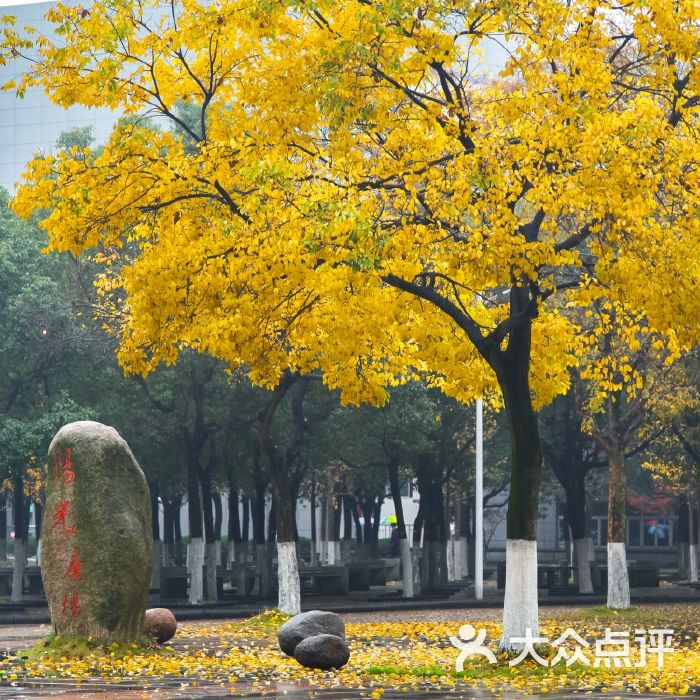
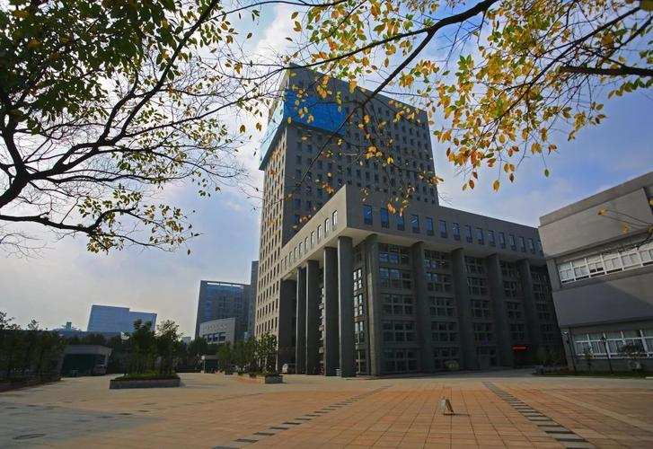
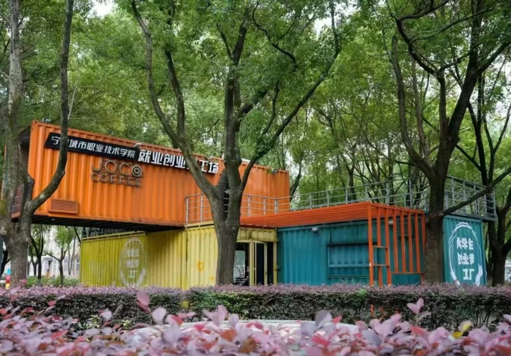

ID:203190601
欢迎来到我的
学校
Something new
学校概况
宁波城市职业技术学院创建于2003年，学校的前身是宁波大学职业技术教育学院，是一所面向现代服务业培养高素质技术技能应用型人才的全日制普通高等职业院校。1992年，邵逸夫先生捐资兴建原宁波师范学院“逸夫高等职业技术教育中心”，是浙江省最早开展全日制高等职业技术教育的机构之一。1996年，原宁波大学、原宁波师范学院、原浙江水产学院宁波分院合并组建新的宁波大学，设立宁波大学职业技术教育学院。2000年，原国家海洋局宁波海洋学校、原国家林业局宁波林业学校并入宁波大学，原宁波林业学校专业、人员和原宁波海洋学校部分专业、人员划归职教学院。2003年，省政府批准在宁波大学职教学院的基础上组建为独立建制的宁波城市职业技术学院。学校本部校区地处宁波鄞州高教园区，新建奉化校区位于奉化城西文化教育园区。学校下设商学院、信息与智能工程学院、艺术学院、旅游学院、国际学院/TAFE学院、景观生态学院、财会金融学院、成人教育学院/继续教育学院等8个二级学院及思想政治理论课教学部/基础课教学部。学校现有教职工550余人，全日制本专科在校生近万人。

Something new
学校风景

阳光广场和实训大楼
操场
游园会

梦工厂
他们说

不请自来，作为19年会计专业毕业的大三学生。城院位于宁波南高教园区（大学城），隔壁鄞州职教，过去一点还有浙大宁理工，侧门出去走10分钟左右有学府一号（别称“钱”街，有各种美食可以吃），旁边就是宁波大学园区图书馆，环境很好。我们学校自己也有六层楼的图书馆，图书资源丰富，个人偏爱图书馆的氛围，偶尔看看里面的书籍，最后快走了打算考CPA（注册会计师）去找了下书，说实话相关书籍版本太早了，难以参考，还是去书城吧。
茯苓 知乎